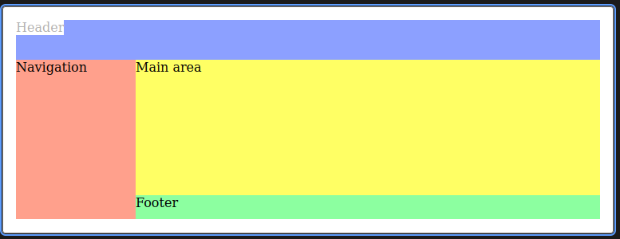

The Garnish | CSS Grid
Join us on...

#generation-x

#tabletop

#movies

#cats_and_doggos
Our mentors

are super heroes!
Tonight's Agenda: CSS Grid
- CSS Layout Systems
- Grid Container
- Tracks
- Areas
- Grid Specific CSS Functions

Layout System Basics
CSS Grid, and similarly CSS Flexbox, give us powerful layout mechanisms out of the box.
What are the benefits to a Layout System?
- Handles more complex layout needs.
- Handles wrapping and flexibility for different screen sizes.
- Allows for more maintainable code as we are no longer needing workarounds and hacks.
- It has grown in popularity so much its basically the industry standard.
CSS Flexbox VS CSS Grid

The Great Battle??
No.. Not really. They are just different systems for different situations.
We can even use Grid and Flexbox together! They complement eachother.
We use Flexbox when we need to have elements layout in one-dimension. IE: either a row or a column. Elements can wrap into multiple rows or columns but cannot be in both at one time. Flexbox Example
We use Grid when we need element layouts in two-dimensions. IE: Elements aligned in both rows and columns. Grid Example
Let's see what Grid can do!
Here are a few examples of what we can make using Grid:
Grid Advent Calendar- Interesting Note: this layout has rows that do not exactly line up with the columns!
Grid Nom Nom Gallery- Interesting Note: this layout has a defined height for the first couple of rows. Later each row has dynamic heights. Grid is so flexible!
With the sunsetting of Internet Explorer Grid is even more available for use! If ever in doubt check CanIUse.
What Browsers Support Grid?
Pretty much all of them now! Internet Explore was sunsetted by Microsoft and most other browser support Grid. If in doubt, check CanIUse.
If necessary, we can use CSS Feature Queries using the @supports selector to add support for Grid.
@supports(display: grid) {
/* do cool grid work */
}
How do we add CSS Grid to a project?
Start by creating a parent container with a class to style.
Common parent containers include main, header, footer, form, section, article, div. Keep Semantic HTML in mind. Use div when necessary but try to use one the others when possible.
<section class="container>
<!--child elements here -- >
</section class="container>
.container {
display: grid;
}
The default is display:block. By overriding the display to use grid, we are telling the site that all elements inside of the conainer should be grid items.
Our First Grid Container
Lets take a look at a Grid layout:

Note the defined columns and rows! A grid track is the space between any two lines in a grid.
In this example we have 2 rows and 3 columns. The first row spans 3 columns. The top row, highlighted in green, is the first row track.
Tracks: Explicit Columns
Define columns using grid-template-columns property to define the size of each column.
.container {
display: grid;
grid-template-columns: 200px 200px;
}
In the example, we created two columns that are each 200px. We used pixel size but we can use any unit of measurement we want.
If there are more elements than defined columns, the element will wrap to the next row.
Tracks: Explicit Rows
Define rows using grid-template-rows property to define the size of each row.
.container {
display: grid;
grid-template-rows: 200px 200px;
}
In the example, we created two rows that are each 200px. We used pixel size but we can use any unit of measurement we want.
If there are more elements than defined rows, the element will wrap to the next column.
Implicit Tracks
In our previous examples we used absolute size in our style definition. We can also use implicit sizing and let grid items use available space using the value auto.
.container {
display: grid;
grid-template-columns: auto auto;
}
We can even mix implicit and explicit sizes. For example, to create a 2 column grid where we fix the size of one column to 250px and let the other fill the space.
.container {
display: grid;
grid-template-columns: auto 250px;
}
Relative Sizing
Grid gives us a new unit of measure to work with, fr. The fr unit allows sizing relative to other tracks and is an abbreviation for "frame". This allows us to define size relative to a base size.
.container {
display: grid;
grid-template-columns: 2fr 1fr;
}
In this example, the first column will be twice the size (or take up two frames) as the second column. We can combine all of the various sizing techniques for ultimate control!
Identifying Lines
Lines that make up the borders of tracks are numbered for easier reference.

Lines are numbered in increasing sequence from left to right and top to bottom.
Naming Lines
Sometimes we want to add more context or descriptions for our lines in the css code. [] - Square brackets denote the name. For example:
.container {
display: grid;
grid-template-columns: [col-1-start] 1fr [col-2-start] 1fr [col-2-end];
}
Once the lines have names, we can use that in later css codes to place elements more precisely. We will take a deeper at this in a future slide.
Positioning Elements
In our previous examples we have let everything flow and wrap. What if we want to skip a column or a row?
.container {
display: grid;
grid-template-columns: 1fr 1fr 1fr;
grid-template-rows: 1fr 1fr 1fr;
}
.grid-item {
grid-column-start: 1;
grid-column-end: 4;
grid-row-start: 1;
grid-row-end: 3;
}
Positioning Elements With Named Columns and Rows
We can accomplish the same thing as our last example with named lines.
.container {
display: grid;
grid-template-columns: [start-col] 1fr [mid-1-col] 1fr [mid-2-col] 1fr [end-col];
grid-template-rows: [start-row] 1fr [mid-row] 1fr [end-row];
}
.grid-item {
grid-column-start: start-col;
grid-column-end: end-col; /* span across 3 columns for this item */
grid-row-start: start-row;
grid-row-end: mid-row;
}
Shorthand Notation for Positioning
Like most things in coding, we have found a way to cut down on typing. There is a shorthand notation for line positioning. We can use a a few new properties, grid-column and grid-row.
The value will be two part. The syntax is start-line / end-line.
.grid-item {
grid-column: 1 / 4; /* start on line 1 end on line 4 */;
grid-row: 1;
}
Work Time
See you soon!

Areas
We can also define areas and to set up positioning. A Grid Area is when grid items span across multiple columns and / or rows. It simplifies creating and updating positioning.

How it Works
Lets say we want header across the top, footer across the bottom, and in the middle row, we have a content and a side navigation.
.container {
/* display, grid-template-columns, and grid-template-rows from above */
display: grid;
grid-template-columns: 200px 1fr;
grid-template-rows: 100px 1fr 150px;
}
Then we will use the property grid-template-areas to define. White space and new lines are used to position in columns and rows. We can use a . to skip a grid cell.
.container {
grid-template-areas: "header" "header"
"sidenav" "content"
"footer" "footer";
}
Matching HTML tags to grid areas
We have defined how sections should fit together in the grid, now we need to tell the html which tags will be those sections.
header {
grid-area: header;
}
We would further need to define the matching html tags for sidenav, content, and footer.
Grid CSS Functions
Grid also has functions to help set up grids and sizing.
Repeat: Simplify setting up grid colums or rows by using repeat.
It will be easier to write, maintain, and read the code. The general syntax is repeat(number of rows or columns, size)
.container {
display: grid;
grid-template-columns: 150px 1fr 1fr 1fr auto;
}
.container {
display: grid;
grid-template-columns: 150px repeat(3, 1fr) auto;
}
Flexing Track Size
With the exception of auto, all our examples had specific sizes. We can also define a range of size using the CSS function specifically for grid called minmax.
minmax(minimum size, maximum size)
.container {
display: grid;
minmax(20px, auto) 1fr 1fr;
}
This example will let column 1 be smaller than 20px, but take up the rest of the allowed space.
Resources and Practice
Resources
Practice
Thank you!
Have a great time making the web more beautiful!